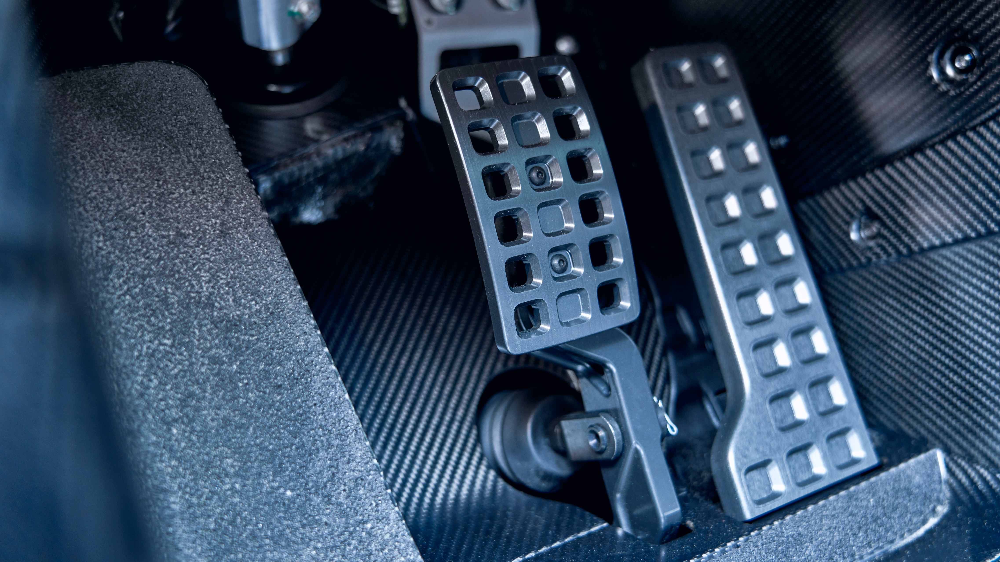
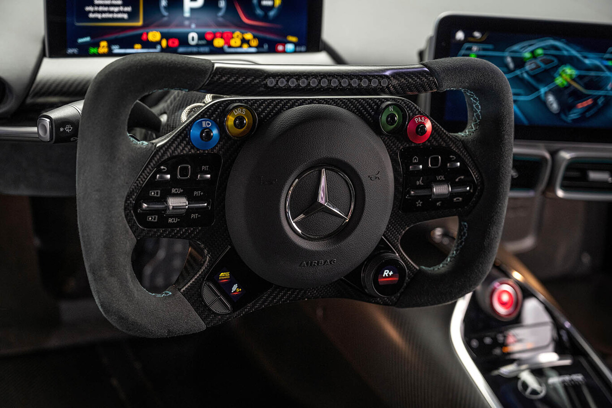

Rendimiento increíble, llevado directamente a la carretera. El Mercedes-AMG ONE es conducción deportiva en estado puro. Con una aceleración de 0 a 200 km/h en 7,0 segundos o de 0 a 300 km/h en 15,6 segundos, este hipercoche marca el rumbo: la velocidad máxima regulada electrónicamente de 352 km/h. Cifras impresionantes que se hacen aún más potentes gracias a los programas de piloto para el circuito extraídos de la Fórmula 1. En el programa Strat 2, la aerodinámica activa, el ajuste más preciso del chasis, la reducción de la altura del vehículo y el rendimiento completo de todos sus motores funcionan igual que en la clasificación de Fórmula 1. Nunca ha habido nada igual. Pero ahora siempre estará ahí.
Potencia infinita
Motor
El AMG One es una bestia de carreras que desarrolla 1.063 CV gracias a sus cinco motores. Sí, equipa cinco motores: cuatro eléctricos y uno gasolina. Es más, es un híbrido enchufable. El sistema híbrido del AMG One está formado por un V6 de 1.6 litros de cilindrada y sobrealimentado por un turbo. Desarrolla 574 CV a 9.000 rpm y es capaz de subir hasta 11.000 vueltas.
Amg 2022
Suspensiones
La suspensión activa cuenta con un esquema de cinco brazos con dos tirantes ajustables, tanto en la parte delantera como trasera, mientras que los frenos lucen discos cerámicos de 398 mm de diámetro con pinzas de seis pistones delante. Si bien su motor es derivado del bloque de F1 de 2017, por suerte, las ruedas del Mercedes-AMG One no lo son. Calza llantas de 10x19 con Michelin Pilot Sport Cup 2R M01 de 285/35 ZR 19, desarrollados en exclusiva para este modelo, y llantas de 12x20 con los mismos Michelin en 335/30 ZR 20.

A tu gusto
6 modos de conduccion
El cambio es manual y automatizado de siete marchas. Incluye seis modos de conducción:
Race Plus: programa estándar con circulación híbrida y arrancada en modo eléctrico. El motor de combustión entra en acción si se requiere más potencia.
Race: circulación híbrida con carga activa de la batería.
EV: circulación en modo eléctrico.
Race Plus: pensado para circuito, entran en acción la aerodinámica activa y la reducción de la altura libre al suelo para buscar más rendimiento. La suspensión se endurece y la gestión de la potencia también se agudiza.
Strat 2: pensado para circuito, es el modo equivalente a una clasificación de Fórmula 1.
Individual: ajustes personalizados.
Interior
Lo mejor que vivirás
Interno
El interior está inspirado en el mundo de la Fórmula 1. El habitáculo es minimalista pero cómodo, con una clara orientación hacia la funcionalidad y la
Aire confort
Pantalla y air acondicionado.
es el cerebro que conecta al conductor con la potencia extrema de este hiperdeportivo. Con un diseño intuitivo y de alta tecnología, esta pantalla permite controlar y monitorear cada aspecto del vehículo, desde los modos de conducción hasta las prestaciones aerodinámicas y el estado del motor. Todo está al alcance de tus dedos, brindándote una experiencia de conducción sensacional. Contiene 4 salidas de aire acondicionado y como puedes ver en la imagen, tiene un medidor de temperatura para cada parte del AMG.
De primera
Asientos
Los asientos tipo cubo están revestidos en materiales de alta calidad como cuero y Alcántara, brindando un soporte ergonómico ideal para resistir las fuerzas G en curvas y aceleraciones extremas. Estos asientos, de perfil bajo, están integrados en la cabina como parte del chasis, ofreciendo una postura de conducción baja y centrada, que potencia la sensación de estar en un coche de carreras.
Formula 1
Volante
El volante, inspirado directamente en la F1, presenta controles integrados que permiten ajustar los modos de conducción y diversas configuraciones del vehículo sin quitar las manos del mismo. Los paneles laterales y el tablero, con acabados en fibra de carbono expuesta, subrayan el enfoque en la reducción de peso y el rendimiento puro.

Consola mágica
Tablero
Detrás del volante, las pantallas digitales de alta resolución ofrecen toda la información esencial, desde la telemetría del motor hasta el estado de los sistemas del coche, presentados de manera clara y precisa. La consola central es esbelta y minimalista, eliminando cualquier distracción innecesaria y enfocándose en lo esencial para el piloto.
- Detalles
Sin perder Lujo
Material
El AMG One no sacrifica el lujo: detalles en aluminio pulido y acabados meticulosamente trabajados añaden un toque de sofisticación.
Con matafuegos
Seguridad
La seguridad del Mercedes AMG one es la máxima, detras del asiento hay matafuegos faciles de quitar.
Accesorios
Detalles en todos lados
El Mercedes AMG one 2021 tiene detalles y tecnologías en todos lados.
Detalles de lujo
Cinturon de seguris
El AMG como te fuiste dando cuenta tiene detalles en todos lados, en la imagen puedes ver la calidad de solamente el cinturon de seguridad.
Exterior
F1
General
El exterior del Mercedes AMG One 2021 es una obra maestra de la aerodinámica y el diseño de alto rendimiento, inspirado directamente en la tecnología de Fórmula 1. Cada línea, cada curva del vehículo ha sido esculpida con un propósito claro: maximizar la eficiencia aerodinámica y optimizar el rendimiento en la pista.
Rapidez
Estructura
La silueta del coche es fluida y compacta, con una carrocería fabricada en fibra de carbono ultraligera que reduce el peso y mejora la rigidez estructural. Los guardabarros pronunciados y las llantas de aleación ligera de gran tamaño resaltan la postura ancha y atlética del vehículo. Los detalles en fibra de carbono visibles y los acentos aerodinámicos, como las aletas laterales y los faldones bajos, subrayan su enfoque en la velocidad y el control.
Aerodinamico
Trasero
En la parte trasera, el diseño se hace aún más radical. El alerón ajustable y el difusor masivo ayudan a generar una enorme carga aerodinámica, pegando el coche al asfalto a altas velocidades. Las luces traseras, en forma de barras LED delgadas, continúan el lenguaje de diseño moderno y afilado. En el centro, una toma de aire de estilo F1 se extiende desde el techo hasta el motor V6 híbrido, mejorando la refrigeración y dándole al AMG One un aspecto de coche de carreras puro.
Aerodinamico
Race Plus
Race Plus, por su parte, activa una función aerodinámica que despliega el alerón trasero en un ángulo predeterminado para aumentar la carga aerodinámica, baja la suspensión y proporciona lo que AMG describe como una "gestión especial del rendimiento" de la cadena cinemática.
Equilibrio perfecto
Ruedas
Cada rueda está equipada con llantas de aleación forjadas, ultraligeras, que combinan resistencia y ligereza, ayudando a reducir el peso no suspendido y mejorando la agilidad del vehículo. Estas llantas de gran tamaño, de 19 pulgadas en la parte delantera y 20 pulgadas en la parte trasera, están equipadas con un diseño de radios finos que optimizan el flujo de aire, ayudando a la refrigeración de los frenos de alto rendimiento.
 Motorizacion
Motorizacion